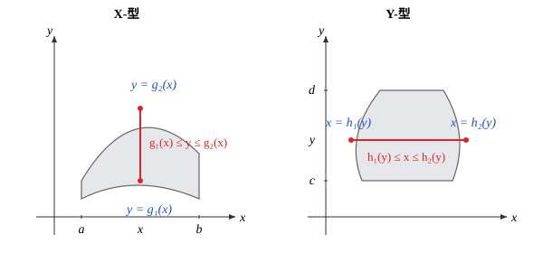

第十一章: 多元函数的积分
单变量积分把一段曲线下的面积写成 \int_a^b f(x)\,\mathrm{d}x. 当被积对象从一段曲线变成一块薄片或一团立体, 当密度从均匀变成 \rho(x,y) 或 \rho(x,y,z), 我们需要新的积分: 二重积分与三重积分. 本章贯穿一条物理主线 —— 不均匀薄片 / 立体的质量.
每一节都重复同样的四步: 分割 → 近似 → 求和 → 取极限. 把这四步看清楚, 多元积分就只是单变量积分在更高维度上的自然延展.
11.1 物理动机: 不均匀薄片的质量
一块均匀薄片的质量 M = \rho \cdot A —— 密度乘面积, 一步乘法搞定. 如果密度随位置变化, 写成 \rho(x,y), 这种”乘法”还能用吗?
思路: 局部均匀, 整体求和. 把薄片所占区域 D 分成 N 个互不重叠的小片, 第 i 片面积记作 \Delta A_i. 当每片足够小时, 它内部的密度可以用一个代表点 (x_i, y_i) 处的值 \rho(x_i, y_i) 来近似. 因此: M \approx \sum_{i=1}^N \rho(x_i, y_i)\,\Delta A_i. 让分割越来越细 (N\to\infty, 且 \max\Delta A_i \to 0), 上面这个 Riemann 和如果有极限, 这个极限就是真正的质量.
上图把这条思路可视化了: 颜色表示 \rho(x,y) = 0.6 + 0.5\sin 2x\,\cos 1.5 y 在 D = [0,\pi]^2 上的取值, 网格把 D 切成 N\times N 个小方块, 圆点是每块的代表点. 拖动滑块改变 N, 看 Riemann 和如何逐步逼近真实积分.
把上图的滑块依次拨到 N = 4, 16, 64, 记下显示的 Riemann 和与真实积分的差距. 你会观察到: 误差大致以 O(1/N) 的速度衰减 (粗网格时这条规律尤为清晰), 当 N 足够大, 近似值与极限值的差小到任意指定阈值以下.
这正是”极限存在”的直观证据 —— 我们已经为非均匀薄片的”总质量”找到了精确定义. 把质量替换成”在 D 上的总累积量”, 把密度替换成任意函数 f(x,y), 同样的步骤就给出了二重积分的一般概念.
11.2 把动机变成定义: 二重积分
设 f(x,y) 在有界闭区域 D \subset \mathbb{R}^2 上有界. 把 D 任意分割为 N 个互不重叠的小区域 \Delta D_1, \dots, \Delta D_N, 它们的面积分别记作 \Delta A_i, 并在每个 \Delta D_i 中任取一个代表点 (\xi_i, \eta_i). 记 \lambda = \max_i \mathrm{diam}(\Delta D_i) 为分割的细度. 若极限 \lim_{\lambda\to 0}\sum_{i=1}^N f(\xi_i, \eta_i)\,\Delta A_i 存在且与分割方式、代表点选取无关, 则称该极限为 f 在 D 上的二重积分, 记作 \iint_D f(x,y)\,\mathrm{d}A \quad\text{或}\quad \iint_D f(x,y)\,\mathrm{d}x\mathrm{d}y. 这里 \mathrm{d}A 是面积元, 在直角坐标系中就是 \mathrm{d}x\,\mathrm{d}y.
上图展示当 f \ge 0 时的几何画面: Riemann 和是一族小柱体的体积之和, 极限值就是曲面 z = f(x,y) 与底面 D 之间所夹立体的体积.
两图对应同一个被积函数 z = 1 - x^2 - y^2, 区别只在积分区域:
- 左图 D = [0,1]^2 包含 z<0 的角落区域 (红色): 红色体积按负值计入, 绿色按正值计入, 二重积分 \iint_D (1-x^2-y^2)\,\mathrm{d}A = \tfrac{1}{3} 是这两块体积的代数和, 即”带符号体积”.
- 右图 D = \{(x,y): x^2+y^2\le 1, x,y\ge 0\} 恰好取 z \ge 0 的最大区域: 此时 \iint_D (1-x^2-y^2)\,\mathrm{d}A = \tfrac{\pi}{8} 等于以四分之一圆盘为底、抛物面为顶的立体的纯体积.
同一个被积函数, 选择不同的 D, 几何含义随之改变 —— 这正是后面”何时换坐标”问题背后的几何动机.
设 f, g 在 D 上可积, D = D_1 \cup D_2 且 D_1, D_2 仅在边界相交.
(1) 线性. 对任意常数 \alpha, \beta, \iint_D (\alpha f + \beta g)\,\mathrm{d}A = \alpha\iint_D f\,\mathrm{d}A + \beta\iint_D g\,\mathrm{d}A. (2) 区域可加性. \iint_D f\,\mathrm{d}A = \iint_{D_1} f\,\mathrm{d}A + \iint_{D_2} f\,\mathrm{d}A.
(3) 单调性. 若在 D 上 f \le g, 则 \iint_D f\,\mathrm{d}A \le \iint_D g\,\mathrm{d}A. 特别地, |\iint_D f\,\mathrm{d}A| \le \iint_D |f|\,\mathrm{d}A.
(4) 平均值. 设 A = \iint_D \mathrm{d}A 为 D 的面积, 则 f 在 D 上的平均值为 \bar f = \dfrac{1}{A}\iint_D f\,\mathrm{d}A. 若 f 连续, 存在 (x^*, y^*) \in D 使 f(x^*, y^*) = \bar f (二维积分中值定理).
一个常用结论: 若 f 在有界闭区域 D 上连续, 则 f 在 D 上可积. 更一般地, 若 f 在 D 上有界且仅在测度为零的子集 (例如有限条曲线) 上不连续, 则 f 仍然可积. 严格证明属于实分析内容, 此处仅作了解.
11.3 通过累次积分求解 (Fubini)
计算曲面下立体的体积有一个朴素的办法: 切片. 沿 x 方向把立体切成无穷多个薄片, 每片在 x = x_0 处的截面是一个二维图形, 其面积记作 A(x_0); 把所有片的”面积 × 厚度”加起来, 体积 V = \int_a^b A(x_0)\,\mathrm{d}x_0. 而每片的截面面积 A(x_0) = \int f(x_0, y)\,\mathrm{d}y, 又是一个一维积分. 这样, 二重积分就被拆成了两次一维积分.
左图沿 x 切, 右图沿 y 切. 拖动滑块, 高亮的截面随之扫过整个立体. 两种切法对应两种”先内后外”的累次积分顺序, 而它们都应该得到同一个体积 —— 这正是下面 Fubini 定理要保证的事.
设 f(x,y) 在矩形 D = [a,b]\times[c,d] 上连续, 则 \iint_D f(x,y)\,\mathrm{d}A = \int_a^b\!\left(\int_c^d f(x,y)\,\mathrm{d}y\right)\mathrm{d}x = \int_c^d\!\left(\int_a^b f(x,y)\,\mathrm{d}x\right)\mathrm{d}y. 即: 二重积分等于两次累次积分, 且两种顺序结果相同.
把 [a,b] 等分为 m 段, [c,d] 等分为 n 段, 形成 m\times n 个小矩形 \Delta D_{ij}, 面积 \Delta x\,\Delta y. 取代表点 (x_i, y_j), Riemann 和为 S_{m,n} = \sum_{i=1}^m\sum_{j=1}^n f(x_i, y_j)\,\Delta x\,\Delta y = \sum_{i=1}^m \left(\sum_{j=1}^n f(x_i, y_j)\,\Delta y\right)\Delta x. 由 f 在闭矩形上一致连续, 当 n\to\infty 时内层和一致地收敛到 \int_c^d f(x_i, y)\,\mathrm{d}y. 记此一维积分为 A(x_i), 它仍是 x 的连续函数. 再令 m\to\infty, 外层 Riemann 和收敛到 \int_a^b A(x)\,\mathrm{d}x. 因此 \iint_D f\,\mathrm{d}A = \lim_{m,n\to\infty} S_{m,n} = \int_a^b\!\int_c^d f\,\mathrm{d}y\,\mathrm{d}x. 把内外层互换重复以上推理, 得到对偶的累次顺序. \blacksquare
把 D 按”沿哪一个方向是单调的纵向条带”分类:
X-型区域: D = \{(x,y): a\le x\le b,\ g_1(x)\le y\le g_2(x)\}, 其中 g_1, g_2 在 [a,b] 上连续. 则 \iint_D f\,\mathrm{d}A = \int_a^b\!\int_{g_1(x)}^{g_2(x)} f(x,y)\,\mathrm{d}y\,\mathrm{d}x.
Y-型区域: D = \{(x,y): c\le y\le d,\ h_1(y)\le x\le h_2(y)\}. 则 \iint_D f\,\mathrm{d}A = \int_c^d\!\int_{h_1(y)}^{h_2(y)} f(x,y)\,\mathrm{d}x\,\mathrm{d}y.
同一个 D 可能同时是 X-型与 Y-型, 此时两种顺序均可, 通常选内层积分更易算的那一种.

计算 \displaystyle\iint_D (x+y)\,\mathrm{d}A, 其中 D = [0,1]\times[0,2].
选择”先 y 后 x“的顺序: \iint_D (x+y)\,\mathrm{d}A = \int_0^1\!\int_0^2 (x+y)\,\mathrm{d}y\,\mathrm{d}x = \int_0^1 \left[xy + \tfrac{y^2}{2}\right]_{y=0}^{y=2}\mathrm{d}x = \int_0^1 (2x + 2)\,\mathrm{d}x = 1 + 2 = 3. 反过来”先 x 后 y“也得 3, 验证 Fubini.
设 D 为曲线 y = x 与 y = x^2 在第一象限围成的区域. 求 \displaystyle\iint_D xy\,\mathrm{d}A.
两曲线交于 (0,0) 与 (1,1). 在 0\le x\le 1 上, x^2 \le y \le x, 因此 D 是 X-型. 于是 \iint_D xy\,\mathrm{d}A = \int_0^1\!\int_{x^2}^{x} xy\,\mathrm{d}y\,\mathrm{d}x = \int_0^1 x \cdot \tfrac{1}{2}(x^2 - x^4)\,\mathrm{d}x = \tfrac{1}{2}\int_0^1 (x^3 - x^5)\,\mathrm{d}x = \tfrac{1}{2}\left(\tfrac{1}{4} - \tfrac{1}{6}\right) = \tfrac{1}{24}.
当内层积分没有初等原函数时, 调换累次顺序常能救场. 经典例子: I = \int_0^1\!\int_x^1 e^{y^2}\,\mathrm{d}y\,\mathrm{d}x. 内层 \int e^{y^2}\,\mathrm{d}y 没有初等表达, 直接算无从下手. 把积分区域 \{0\le x\le 1,\ x\le y\le 1\} 重新看作 Y-型 \{0\le y\le 1,\ 0\le x\le y\}, 换序得 I = \int_0^1\!\int_0^y e^{y^2}\,\mathrm{d}x\,\mathrm{d}y = \int_0^1 y\,e^{y^2}\,\mathrm{d}y = \tfrac{1}{2}(e - 1). 一次换序, 一个无初等原函数的难题立刻可算 —— 这正是累次积分的灵活之处.
在累次积分中, 内层积分的上下限只能依赖外层变量, 反过来不行. 比如写 \int_a^b\!\int_{g_1(y)}^{g_2(y)} f\,\mathrm{d}y\,\mathrm{d}x 是错的: 内层是对 y 积分, 上下限里却又出现了 y, 积完之后表达式仍含 y, 无法继续对 x 积. 写累次积分时检查: 最外层积分的上下限必须是常数, 中间各层的上下限只能含外侧变量.
已知 f(x,y) = 1 - x^2 - y^2，D = \{(x,y) \mid 0 \leq x \leq 1,\ 0 \leq y \leq 1\}，计算
\iint_D f(x,y)\,\mathrm{d}A.
矩形区域上，将二重积分化为累次积分，先对 x 积分（内层），再对 y 积分（外层）。
\iint_D f(x,y)\,\mathrm{d}A = \int_0^1\!\int_0^1 (1-x^2-y^2)\,\mathrm{d}x\,\mathrm{d}y.
内层积分（对 x）：
\int_0^1(1-x^2-y^2)\,\mathrm{d}x = \left[x - \frac{x^3}{3} - y^2 x\right]_0^1 = \frac{2}{3} - y^2.
外层积分（对 y）：
\int_0^1\left(\frac{2}{3} - y^2\right)\mathrm{d}y = \left[\frac{2}{3}y - \frac{y^3}{3}\right]_0^1 = \frac{2}{3} - \frac{1}{3} = \frac{1}{3}.
两种积分顺序结果相同（可验证先对 y 后对 x 同样得 \dfrac{1}{3}）。
已知 f(x,y) = 1-x^2-y^2，D = \{(x,y) \mid x^2+y^2 \leq 1,\ x > 0,\ y > 0\}，计算
\iint_D f(x,y)\,\mathrm{d}A.
在第一象限单位圆域上，将二重积分化为累次积分：y 的范围从 0 到 \sqrt{1-x^2}，内层积分化简后外层用三角换元 x = \sin\theta 求解。
\iint_D f(x,y)\,\mathrm{d}A = \int_0^1\!\left[\int_0^{\sqrt{1-x^2}}(1-x^2-y^2)\,\mathrm{d}y\right]\mathrm{d}x.
内层积分（对 y）：
\int_0^{\sqrt{1-x^2}}(1-x^2-y^2)\,\mathrm{d}y = \left[y - x^2 y - \frac{y^3}{3}\right]_0^{\sqrt{1-x^2}} = \frac{2}{3}(1-x^2)^{3/2}.
外层积分（对 x），令 x = \sin\theta，\mathrm{d}x = \cos\theta\,\mathrm{d}\theta：
\int_0^1 \frac{2}{3}(1-x^2)^{3/2}\,\mathrm{d}x = \frac{2}{3}\int_0^{\pi/2}\cos^4\theta\,\mathrm{d}\theta = \frac{2}{3} \cdot \frac{3\pi}{16} = \frac{\pi}{8}.
（其中 \displaystyle\int_0^{\pi/2}\cos^4\theta\,\mathrm{d}\theta = \frac{3\pi}{16} 由降幂公式得到。）
计算 \displaystyle\iint_{D} xy\,\mathrm{d}x\,\mathrm{d}y，其中积分区域 D 由直线 y = 1、x = 2 及 y = x 围成。
先画出区域 D：三角形，顶点为 (1,1)，(2,1)，(2,2)。选取以 x 为外积分变量时，y 从 1 到 x；以 y 为外变量时，x 从 y 到 2。
解法一：先对 y 后对 x
\iint_D xy\,\mathrm{d}x\,\mathrm{d}y = \int_1^2\!\left[\int_1^x xy\,\mathrm{d}y\right]\mathrm{d}x = \int_1^2\left[\frac{xy^2}{2}\right]_1^x\mathrm{d}x = \int_1^2\left(\frac{x^3}{2} - \frac{x}{2}\right)\mathrm{d}x = \left[\frac{x^4}{8} - \frac{x^2}{4}\right]_1^2 = \frac{9}{8}.
解法二：先对 x 后对 y
\iint_D xy\,\mathrm{d}x\,\mathrm{d}y = \int_1^2\!\left[\int_y^2 xy\,\mathrm{d}x\right]\mathrm{d}y = \int_1^2\left[\frac{x^2 y}{2}\right]_y^2\mathrm{d}y = \int_1^2\left(2y - \frac{y^3}{2}\right)\mathrm{d}y = \left[y^2 - \frac{y^4}{8}\right]_1^2 = \frac{9}{8}.
两种顺序结果一致。
可直接交换积分顺序验证结果相同，适合练习区域描述的两种表达方式。
同解法一、二，见上。
计算 \displaystyle\iint_{D} y\sqrt{1+x^2-y^2}\,\mathrm{d}\sigma，其中 D 由直线 y = x、x = -1 及 y = 1 围成的闭区域。
选取先对 y（从 x 到 1）后对 x（从 -1 到 1）的积分顺序，内层积分对 y 用凑微分法：y\,\mathrm{d}y = -\dfrac{1}{2}\mathrm{d}(1+x^2-y^2)。
\iint_D y\sqrt{1+x^2-y^2}\,\mathrm{d}x\,\mathrm{d}y = \int_{-1}^1\!\mathrm{d}x\int_x^1 y\sqrt{1+x^2-y^2}\,\mathrm{d}y.
内层积分（对 y）： 令 u = 1+x^2-y^2，则 \mathrm{d}u = -2y\,\mathrm{d}y：
\int_x^1 y\sqrt{1+x^2-y^2}\,\mathrm{d}y = \left[-\frac{1}{3}(1+x^2-y^2)^{3/2}\right]_x^1 = \frac{1}{3}|x|^3 - \frac{1}{3}\cdot 0 = \frac{1}{3}|x|^3.
（当 y = 1：1+x^2-1 = x^2，(x^2)^{3/2} = |x|^3；当 y=x：1+x^2-x^2 = 1，(1)^{3/2}=1。）
\int_x^1 y\sqrt{1+x^2-y^2}\,\mathrm{d}y = \frac{1}{3}(1 - |x|^3).
外层积分（对 x，利用偶函数对称）：
\int_{-1}^1 \frac{1}{3}(1-|x|^3)\,\mathrm{d}x = \frac{2}{3}\int_0^1(1-x^3)\,\mathrm{d}x = \frac{2}{3}\left[x - \frac{x^4}{4}\right]_0^1 = \frac{2}{3} \cdot \frac{3}{4} = \frac{1}{2}.
已知 f(x,y)=1-x^2-y^2，D= \{(x,y)\mid x^2+y^2\leq 1,\,x\geq 0,\,y\geq 0\}，计算
\iint_D f(x,y)\,\mathrm{d}A.
区域 D 是单位圆盘在第一象限的部分，天然适合用极坐标。令 x=r\cos\theta，y=r\sin\theta，则面积元变为 \mathrm{d}A=r\,\mathrm{d}r\,\mathrm{d}\theta，积分区域变为 0\leq\theta\leq\dfrac{\pi}{2}，0\leq r\leq 1。
由于面积元 \mathrm{d}A=\mathrm{d}x\mathrm{d}y=r\,\mathrm{d}r\,\mathrm{d}\theta，令 x=r\cos\theta，y=r\sin\theta，积分化为
\begin{aligned} \iint_D (1-x^2-y^2)\,\mathrm{d}x\mathrm{d}y &= \iint_D (1-r^2)\,r\,\mathrm{d}r\,\mathrm{d}\theta \\ &= \int_0^{\frac{\pi}{2}}\left[\int_0^1(1-r^2)r\,\mathrm{d}r\right]\mathrm{d}\theta \\ &= \frac{\pi}{2}\left[\frac{r^2}{2}-\frac{r^4}{4}\right]_0^1 \\ &= \frac{\pi}{2}\cdot\frac{1}{4} = \frac{\pi}{8}. \end{aligned}
11.4 坐标变换
一个变换 \varphi: (u,v) \mapsto (x,y) 把 (u,v) 平面的一个小矩形 \mathrm{d}u\,\mathrm{d}v 送到 (x,y) 平面的一个小平行四边形. 这个平行四边形的面积一般不再等于 \mathrm{d}u\,\mathrm{d}v, 而是放大了某个倍数. 这个倍数就是变换的雅可比行列式的绝对值.
上图展示线性变换 \varphi(u,v) = (1.2u + 0.6v,\ 0.4u + 1.3v). 左侧 (u,v) 平面上的单位正方格被均匀映成右侧 (x,y) 平面上的平行四边形格. 每个小格的面积放大了 |J| = 1.2\cdot 1.3 - 0.6\cdot 0.4 = 1.32 倍. 两根彩色向量正是 \partial\varphi/\partial u, \partial\varphi/\partial v, 它们是平行四边形的两条边.
设 C^1 变换 \varphi: (u,v) \mapsto (x,y), 即 x = x(u,v),\ y = y(u,v). 它的雅可比矩阵与雅可比行列式分别为 \frac{\partial(x,y)}{\partial(u,v)} = \begin{pmatrix} \dfrac{\partial x}{\partial u} & \dfrac{\partial x}{\partial v} \\[2pt] \dfrac{\partial y}{\partial u} & \dfrac{\partial y}{\partial v} \end{pmatrix}, \quad J = \det\frac{\partial(x,y)}{\partial(u,v)} = \frac{\partial x}{\partial u}\frac{\partial y}{\partial v} - \frac{\partial x}{\partial v}\frac{\partial y}{\partial u}.
全微分给出 \mathrm{d}x = \frac{\partial x}{\partial u}\,\mathrm{d}u + \frac{\partial x}{\partial v}\,\mathrm{d}v, \quad \mathrm{d}y = \frac{\partial y}{\partial u}\,\mathrm{d}u + \frac{\partial y}{\partial v}\,\mathrm{d}v. 把 \mathrm{d}u, \mathrm{d}v 看作 (u,v) 平面上沿坐标轴的两个无穷小向量, 则它们在 (x,y) 平面上的像分别是行向量 \vec a = \left(\tfrac{\partial x}{\partial u},\ \tfrac{\partial y}{\partial u}\right)\mathrm{d}u, \quad \vec b = \left(\tfrac{\partial x}{\partial v},\ \tfrac{\partial y}{\partial v}\right)\mathrm{d}v. 二维空间中以 \vec a, \vec b 为邻边的平行四边形的有向面积等于行列式 \det(\vec a, \vec b), 取绝对值即面积. 化简后: \mathrm{d}x\,\mathrm{d}y = |J|\,\mathrm{d}u\,\mathrm{d}v.
互逆性. 由反函数定理, 若 J\ne 0, 反向变换的雅可比行列式与原方向互为倒数: \det\frac{\partial(u,v)}{\partial(x,y)} = \left[\det\frac{\partial(x,y)}{\partial(u,v)}\right]^{-1}. 这保证了 \mathrm{d}u\,\mathrm{d}v 与 \mathrm{d}x\,\mathrm{d}y 之间的双向换算前后一致.
设 \varphi: D' \to D 是 C^1 双射, 在 D' 内部 J = \det\dfrac{\partial(x,y)}{\partial(u,v)} \ne 0, 函数 f 在 D 上连续. 则 \iint_D f(x,y)\,\mathrm{d}x\,\mathrm{d}y = \iint_{D'} f\bigl(x(u,v), y(u,v)\bigr)\,|J|\,\mathrm{d}u\,\mathrm{d}v.
把 D' 划分为若干小矩形 \Delta_k, 每个 \Delta_k 经 \varphi 映成 D 中的一片”小弯曲四边形” \varphi(\Delta_k). 由前面的几何论证, 当 \Delta_k 足够小时, \varphi(\Delta_k) 的面积近似为 |J(u_k^*, v_k^*)|\cdot \mathrm{Area}(\Delta_k), 其中 (u_k^*, v_k^*) 是 \Delta_k 中的代表点. 于是 \sum_k f\bigl(\varphi(u_k^*, v_k^*)\bigr)\,\mathrm{Area}(\varphi(\Delta_k)) \approx \sum_k f\bigl(\varphi(u_k^*, v_k^*)\bigr)\,|J(u_k^*, v_k^*)|\,\mathrm{Area}(\Delta_k). 左侧极限是 \iint_D f\,\mathrm{d}x\mathrm{d}y, 右侧极限是 \iint_{D'} f(\varphi)\,|J|\,\mathrm{d}u\mathrm{d}v. 把误差严格控制需要 \varphi 的 C^1 性质保证 J 在闭包上一致连续, 细节留给实分析教材. \blacksquare
极坐标变换 x = r\cos\theta,\ y = r\sin\theta 的雅可比行列式为 J = \begin{vmatrix}\cos\theta & -r\sin\theta\\ \sin\theta & r\cos\theta\end{vmatrix} = r. 因此 \mathrm{d}x\,\mathrm{d}y = r\,\mathrm{d}r\,\mathrm{d}\theta. 这是后面所有”圆形区域”积分的工作原理.
左侧 (r,\theta)-矩形 [0,1]\times[0,\pi/2] 被等分成 5\times 6 个等大小矩形, 右侧映射成四分之一圆盘的极坐标网格. 靠近 r=0 的格子被压得很小, 靠近 r=1 的最大 —— 这正是 |J| = r 的几何含义.
计算 \displaystyle V = \iint_D (1 - x^2 - y^2)\,\mathrm{d}A, 其中 D = \{(x,y): x^2 + y^2 \le 1\} 是单位圆盘.
直接用直角坐标: D 在 -\sqrt{1-x^2}\le y\le \sqrt{1-x^2}, 内层积分能算但形状不”自然”. 换极坐标: D' = \{(r,\theta): 0\le r\le 1,\ 0\le \theta\le 2\pi\}, 被积函数 1 - r^2, \mathrm{d}A = r\,\mathrm{d}r\,\mathrm{d}\theta. 因此 V = \int_0^{2\pi}\!\int_0^1 (1-r^2)\,r\,\mathrm{d}r\,\mathrm{d}\theta = 2\pi \int_0^1 (r - r^3)\,\mathrm{d}r = 2\pi \left(\tfrac{1}{2} - \tfrac{1}{4}\right) = \tfrac{\pi}{2}.
几个经验法则:
- 圆形 / 扇形 / 环形区域 → 极坐标 x = r\cos\theta,\ y = r\sin\theta.
- 椭圆区域 \dfrac{x^2}{a^2} + \dfrac{y^2}{b^2}\le 1 → 仿射变换 x = au,\ y = bv.
- 平行四边形或线性条带 → 一般线性变换, 直接读出 |J| = |\det A|.
- 双曲线型边界 (xy = c 之类) → 取 u = xy,\ v = x/y 或类似的非线性组合.
总原则: 让积分区域在新坐标下变成最简单的”标准形” (矩形 / 长方体), 哪怕被积函数稍变复杂也值得.
换元公式里出现的是 |J|, 不是 J. 当 J 可能取负 (例如反射型变换或参数化方向反了), 漏写绝对值会让积分莫名变号. 任何”面积或体积应当为正”的情景中, |J| 才是物理上正确的放缩因子.
计算广义积分
\int_{-\infty}^{+\infty}e^{-x^2}\,\mathrm{d}x.
令 I=\int_{-\infty}^{+\infty}e^{-x^2}\,\mathrm{d}x，则 I^2 可以写成关于 x,y 的二重积分，再换成极坐标计算。
令 \displaystyle I=\int_{-\infty}^{+\infty}e^{-x^2}\,\mathrm{d}x，则
I^2=\int_{-\infty}^{+\infty}\int_{-\infty}^{+\infty}e^{-(x^2+y^2)}\,\mathrm{d}x\,\mathrm{d}y.
令 x=r\cos\theta，y=r\sin\theta，则
\begin{aligned} I^2 &=\int_0^{2\pi}\int_0^{+\infty}e^{-r^2}r\,\mathrm{d}r\,\mathrm{d}\theta \\ &=\int_0^{2\pi}\mathrm{d}\theta\cdot\frac{1}{2}\int_0^{+\infty}e^{-r^2}\,\mathrm{d}(r^2) \\ &=\frac{1}{2}\int_0^{2\pi}\left[-e^{-r^2}\right]_0^{+\infty}\mathrm{d}\theta \\ &= \frac{1}{2}\cdot 2\pi\cdot 1 = \pi. \end{aligned}
故 \displaystyle\int_{-\infty}^{+\infty}e^{-x^2}\,\mathrm{d}x = \sqrt{\pi}.
11.5 推广到三维: 三重积分
把 §11.1 的薄片换成立体: 占据 \mathbb{R}^3 中区域 V 的物体, 密度 \rho(x,y,z) 随位置变化. 同样的四步 (分割 → 近似 → 求和 → 取极限) 给出总质量 M = \iiint_V \rho(x,y,z)\,\mathrm{d}V.
上图把单位圆柱体上的密度 \rho(x,y,z) = 0.5 + 0.4 z + 0.3(x^2+y^2) 用颜色画出来; 拖动滑块看一片片水平截面如何揭示密度的空间变化.
设 f(x,y,z) 在有界闭体 V \subset \mathbb{R}^3 上有界. 把 V 分割为 \Delta V_1, \dots, \Delta V_N, 体积分别为 \Delta V_i, 取代表点 (\xi_i, \eta_i, \zeta_i) \in \Delta V_i, 记 \lambda = \max_i \mathrm{diam}(\Delta V_i). 若极限 \lim_{\lambda\to 0}\sum_{i=1}^N f(\xi_i, \eta_i, \zeta_i)\,\Delta V_i 存在且与分割、代表点选取无关, 则称之为 f 在 V 上的三重积分, 记作 \iiint_V f(x,y,z)\,\mathrm{d}V \quad\text{或}\quad \iiint_V f\,\mathrm{d}x\,\mathrm{d}y\,\mathrm{d}z.
设 V = \{(x,y,z): (x,y) \in D_{xy},\ z_1(x,y)\le z\le z_2(x,y)\}, 其中 D_{xy} 是 V 在 xy-平面的投影, z_1, z_2 在 D_{xy} 上连续, f 在 V 上连续. 则 \iiint_V f\,\mathrm{d}V = \iint_{D_{xy}}\!\left(\int_{z_1(x,y)}^{z_2(x,y)} f(x,y,z)\,\mathrm{d}z\right)\mathrm{d}A. 类似地可投影到 xz-平面或 yz-平面. 三种顺序得到相同的值, 选择何种投影由 V 的几何形状决定.
与二维 Fubini 平行: 把 V 切成柱状的小条 (底为 D_{xy} 中的小区域 \Delta D, 顶底由 z_2, z_1 限定), 每条体积为 \int_{z_1}^{z_2}\mathrm{d}z\cdot \Delta A. 内层积分给出 z 方向的”线密度”, 外层是该线密度在 D_{xy} 上的二重积分. 一致连续性保证内外极限可交换. \blacksquare
计算 \displaystyle \iiint_{[0,1]^3} xyz\,\mathrm{d}V.
三个变量分离, 一次累次积分即可: \iiint_{[0,1]^3} xyz\,\mathrm{d}V = \int_0^1 x\,\mathrm{d}x \cdot \int_0^1 y\,\mathrm{d}y \cdot \int_0^1 z\,\mathrm{d}z = \tfrac{1}{2}\cdot \tfrac{1}{2}\cdot \tfrac{1}{2} = \tfrac{1}{8}.
柱面坐标 (\rho, \theta, z) 与直角坐标的关系: x = \rho\cos\theta,\quad y = \rho\sin\theta,\quad z = z, \qquad \rho\ge 0,\ \theta\in [0, 2\pi). 雅可比行列式 |J| = \rho, 因此体积元 \mathrm{d}V = \rho\,\mathrm{d}\rho\,\mathrm{d}\theta\,\mathrm{d}z. 几何上: 体积元是一根高 \mathrm{d}z、底面是半径 \rho 处宽 \mathrm{d}\rho、弧长 \rho\,\mathrm{d}\theta 的小薄片.
球面坐标 (\rho, \varphi, \theta) 的约定 (\rho 是到原点距离, \varphi 是与 z-轴正向夹角, \theta 是在 xy 平面的方位角): x = \rho\sin\varphi\cos\theta,\quad y = \rho\sin\varphi\sin\theta,\quad z = \rho\cos\varphi, 其中 \rho\ge 0,\ \varphi\in[0,\pi],\ \theta\in[0, 2\pi). 雅可比行列式 |J| = \rho^2\sin\varphi, \qquad \mathrm{d}V = \rho^2\sin\varphi\,\mathrm{d}\rho\,\mathrm{d}\varphi\,\mathrm{d}\theta.
球坐标体积元可以由几何分解直接读出: 给三个变量分别一个微小增量, 立方体边长依次为
- 沿 \rho 方向: \mathrm{d}\rho;
- 沿 \varphi 方向 (以原点为圆心、半径 \rho 的子午圆): \rho\,\mathrm{d}\varphi;
- 沿 \theta 方向 (以 z-轴为轴、半径 \rho\sin\varphi 的纬度圆): \rho\sin\varphi\,\mathrm{d}\theta.
三者两两正交, 所以体积元 = \mathrm{d}\rho \cdot \rho\,\mathrm{d}\varphi \cdot \rho\sin\varphi\,\mathrm{d}\theta = \rho^2\sin\varphi\,\mathrm{d}\rho\,\mathrm{d}\varphi\,\mathrm{d}\theta. 形式化的 |J| 计算可作为练习, 结果一致.
半径 R 的球 V = \{x^2+y^2+z^2\le R^2\} 的体积 V = \iiint_V \mathrm{d}V, 分别在球坐标和柱坐标下计算, 互相验证.
球坐标. V = \{0\le \rho\le R,\ 0\le \varphi\le \pi,\ 0\le\theta\le 2\pi\}: V = \int_0^{2\pi}\!\int_0^\pi\!\int_0^R \rho^2\sin\varphi\,\mathrm{d}\rho\,\mathrm{d}\varphi\,\mathrm{d}\theta = 2\pi \cdot 2 \cdot \tfrac{R^3}{3} = \tfrac{4\pi R^3}{3}.
柱坐标. 在柱坐标下, 球内 z 介于 \pm\sqrt{R^2 - \rho^2} 之间, \rho \in [0, R],\ \theta\in[0,2\pi): V = \int_0^{2\pi}\!\int_0^R\!\int_{-\sqrt{R^2-\rho^2}}^{\sqrt{R^2-\rho^2}} \rho\,\mathrm{d}z\,\mathrm{d}\rho\,\mathrm{d}\theta = 2\pi \int_0^R 2\rho\sqrt{R^2-\rho^2}\,\mathrm{d}\rho = 2\pi \cdot \tfrac{2R^3}{3} = \tfrac{4\pi R^3}{3}. 两种坐标给出同一答案. \blacksquare
- 圆柱形 / 含轴对称的立体 → 柱坐标.
- 球状 / 锥状 / 含中心对称 → 球坐标.
- 长方体 / 平面边界 → 直角坐标累次积分.
- 一般原则: 让积分区域成为新坐标网格的”自然形状”, 即让 V 在新坐标下变成简单的矩形盒.
计算三重积分 \displaystyle\iiint_\Omega x\,\mathrm{d}x\,\mathrm{d}y\,\mathrm{d}z，其中 \Omega 由平面 x + 2y + z = 1 与三个坐标平面（x=0，y=0，z=0）围成。
先对 z（从 0 到 1-x-2y），再对 y（从 0 到 \frac{1-z}{2} 或 \frac{1-x}{2}），最后对 x 积分。
\iiint_\Omega x\,\mathrm{d}x\,\mathrm{d}y\,\mathrm{d}z = \int_0^1\!\mathrm{d}z\int_0^{\frac{1-z}{2}}\!\mathrm{d}y\int_0^{1-2y-z} x\,\mathrm{d}x.
内层（对 x）：
\int_0^{1-2y-z} x\,\mathrm{d}x = \frac{(1-2y-z)^2}{2}.
中层（对 y）：
\int_0^{\frac{1-z}{2}} \frac{(1-2y-z)^2}{2}\,\mathrm{d}y = \frac{1}{12}(1-z)^3.
外层（对 z）：
\int_0^1 \frac{(1-z)^3}{12}\,\mathrm{d}z = \frac{1}{12}\left[-\frac{(1-z)^4}{4}\right]_0^1 = \frac{1}{48}.
改变积分顺序，先对 z（从 0 到 1-x-2y），再对 y（从 0 到 \frac{1-x}{2}），最后对 x（从 0 到 1）。
\iiint_\Omega x\,\mathrm{d}x\,\mathrm{d}y\,\mathrm{d}z = \int_0^1 x\,\mathrm{d}x\int_0^{\frac{1-x}{2}}(1-x-2y)\,\mathrm{d}y = \int_0^1 \frac{x(1-x)^2}{4}\,\mathrm{d}x = \frac{1}{48}.
利用柱面坐标计算三重积分
\iiint_\Omega z\,\mathrm{d}x\,\mathrm{d}y\,\mathrm{d}z,
其中 \Omega 是由曲面 z = x^2+y^2 与平面 z = 4 围成的闭区域。
在柱面坐标 x = \rho\cos\theta，y = \rho\sin\theta，z = z 下，体积元 \mathrm{d}V = \rho\,\mathrm{d}\rho\,\mathrm{d}\theta\,\mathrm{d}z；区域变为 0\leq\rho\leq\sqrt{z}，0\leq\theta\leq 2\pi，0\leq z\leq 4（先对 \rho 和 \theta，再对 z）。
令 x = \rho\cos\theta，y = \rho\sin\theta，则 \mathrm{d}V = \rho\,\mathrm{d}\rho\,\mathrm{d}\theta\,\mathrm{d}z。
区域在柱面坐标下：0 \leq \theta \leq 2\pi，0 \leq z \leq 4，0 \leq \rho \leq \sqrt{z}。
\iiint_\Omega z\,\mathrm{d}x\,\mathrm{d}y\,\mathrm{d}z = \int_0^4\!\mathrm{d}z\int_0^{2\pi}\!\mathrm{d}\theta\int_0^{\sqrt{z}} z\rho\,\mathrm{d}\rho = \int_0^4\!\mathrm{d}z\int_0^{2\pi}\frac{z^2}{2}\,\mathrm{d}\theta = \int_0^4 \pi z^2\,\mathrm{d}z = \pi\left[\frac{z^3}{3}\right]_0^4 = \frac{64\pi}{3}.
11.6 更多应用
设密度函数为 \mu(x,y) (二维) 或 \mu(x,y,z) (三维). 总质量 M = \iint_D \mu(x,y)\,\mathrm{d}A, \qquad M = \iiint_V \mu(x,y,z)\,\mathrm{d}V. 质心是质量分布的加权平均位置. 二维情形: \bar x = \frac{1}{M}\iint_D x\,\mu\,\mathrm{d}A,\quad \bar y = \frac{1}{M}\iint_D y\,\mu\,\mathrm{d}A. 三维情形把每个公式各换为 \iiint_V 即可, 再增加一条 \bar z. 当 \mu 为常数时质心退化为几何形心. 当 D 关于某条直线对称且 \mu 也对称, 质心必落在对称轴上 —— 这条对称性常常省去一半计算.
取 D = \{(x,y): x^2 + y^2\le R^2,\ y \ge 0\} (上半圆盘), 密度均匀 \mu \equiv 1. 求质心 (\bar x, \bar y).
总质量 (即面积) M = \tfrac{1}{2}\pi R^2.
D 关于 y-轴对称, \mu 也对称, 因此 \bar x = 0. 计算 \bar y, 用极坐标 0\le r\le R,\ 0\le\theta\le \pi: \iint_D y\,\mathrm{d}A = \int_0^\pi\!\int_0^R (r\sin\theta)\,r\,\mathrm{d}r\,\mathrm{d}\theta = \int_0^\pi \sin\theta\,\mathrm{d}\theta \cdot \int_0^R r^2\,\mathrm{d}r = 2\cdot \tfrac{R^3}{3} = \tfrac{2R^3}{3}. 因此 \bar y = \dfrac{2R^3/3}{\pi R^2/2} = \dfrac{4R}{3\pi}.
二维区域 D 上密度为 \mu 的质量分布, 关于某点 (x_0, y_0) 的转动惯量 I(x_0, y_0) = \iint_D \mu\bigl[(x-x_0)^2 + (y-y_0)^2\bigr]\,\mathrm{d}A. 它衡量物体绕该点转动时的”惯性大小”: 同等角加速度所需的力矩与 I 成正比.
把 I 看作 (x_0, y_0) 的函数. 求驻点: \tfrac{\partial I}{\partial x_0} = -2\iint_D \mu(x - x_0)\,\mathrm{d}A = 0 \;\Longrightarrow\; x_0 = \tfrac{1}{M}\iint_D \mu x\,\mathrm{d}A = \bar x, 同理 y_0 = \bar y. 二阶项 \partial^2 I/\partial x_0^2 = 2M > 0 给出极小. 因此质心是使转动惯量最小的位置, 这给出了”最易转动”的轴.
设质心为 C = (\bar x, \bar y), 绕过质心的 (垂直于 D 的) 转动惯量记作 I_C. 则绕另一点 (x_0, y_0) 的转动惯量为 I(x_0, y_0) = I_C + M\,r^2, 其中 r = \sqrt{(\bar x - x_0)^2 + (\bar y - y_0)^2} 是两轴之间的距离, M 是总质量.
把 (x - x_0)^2 + (y - y_0)^2 改写为 \bigl((x - \bar x) + (\bar x - x_0)\bigr)^2 + \bigl((y-\bar y) + (\bar y - y_0)\bigr)^2, 展开: I = \underbrace{\iint_D \mu\bigl[(x-\bar x)^2 + (y-\bar y)^2\bigr]\,\mathrm{d}A}_{I_C} + \underbrace{\bigl[(\bar x - x_0)^2 + (\bar y - y_0)^2\bigr]\iint_D \mu\,\mathrm{d}A}_{M r^2} + 2(\bar x - x_0)\underbrace{\iint_D \mu(x - \bar x)\,\mathrm{d}A}_{=\,0} + 2(\bar y - y_0)\underbrace{\iint_D \mu(y - \bar y)\,\mathrm{d}A}_{=\,0}. 末两项的积分由质心定义恒为零, 故 I = I_C + Mr^2. \blacksquare
推论: 在所有平行于过质心的轴中, 过质心那条转动惯量最小; 远离质心 r 单位, 惯量增加 Mr^2.
- 平面区域面积: A = \iint_D \mathrm{d}A.
- 曲面 z = f(x,y) 下方体积 (f\ge 0): V = \iint_D f\,\mathrm{d}A.
- 三维区域体积: V = \iiint_V \mathrm{d}V.
- 流量、第一/第二型曲面积分、引力: 留待第 12 章 (向量场与曲线/曲面积分) 系统处理.
如图所示，求
I = \iint_D r^2(\rho,\theta)\,\rho\,\mathrm{d}\rho\,\mathrm{d}\theta,
其中积分区域 D 由极坐标曲线 \rho = 2\cos\theta（\theta \in [-\pi/2, \pi/2]）围成。
区域 D 为 0 \leq \rho \leq 2\cos\theta，-\pi/2 \leq \theta \leq \pi/2。这里 r^2 = \rho^2（题中 r(\rho,\theta)=\rho），先对 \rho 积分再对 \theta 积分，利用 \cos^4\theta 的降幂公式。
I = \int_{-\pi/2}^{\pi/2}\!\int_0^{2\cos\theta} \rho^3\,\mathrm{d}\rho\,\mathrm{d}\theta = \int_{-\pi/2}^{\pi/2}\left[\frac{\rho^4}{4}\right]_0^{2\cos\theta}\mathrm{d}\theta = \int_{-\pi/2}^{\pi/2} 4\cos^4\theta\,\mathrm{d}\theta.
利用偶函数对称：
I = 8\int_0^{\pi/2}\cos^4\theta\,\mathrm{d}\theta = 8 \cdot \frac{3\pi}{16} = \frac{3\pi}{2}.
（其中 \displaystyle\int_0^{\pi/2}\cos^4\theta\,\mathrm{d}\theta = \frac{3\pi}{16}。）
如图所示，求
I = \iint_D (1 + \rho^2 - 2\rho\cos\theta)\,\rho\,\mathrm{d}\rho\,\mathrm{d}\theta,
其中积分区域 D 由极坐标曲线 \rho = 2\cos\theta 围成。
区域为 0 \leq \rho \leq 2\cos\theta，-\pi/2 \leq \theta \leq \pi/2；展开被积函数后逐项积分。
I = \int_{-\pi/2}^{\pi/2}\!\int_0^{2\cos\theta}(1+\rho^2-2\rho\cos\theta)\,\rho\,\mathrm{d}\rho\,\mathrm{d}\theta = \frac{\pi}{2}.
注意 D 是以 (1,0) 为圆心、半径为 1 的圆盘（直角坐标下 (x-1)^2+y^2=1），利用直角坐标的对称性直接计算：
I = \int_0^{2\pi}\!\int_0^1 \rho^2 \cdot \rho\,\mathrm{d}\rho\,\mathrm{d}\theta.
I = \int_0^{2\pi}\!\int_0^1 \rho^3\,\mathrm{d}\rho\,\mathrm{d}\theta = 2\pi \cdot \frac{1}{4} = \frac{\pi}{2}.
求球体 x^2 + y^2 + z^2 \leq 4a^2 被圆柱面 x^2 + y^2 = 2ax（a > 0）截得的含在圆柱面内的立体体积。
利用对称性，体积为上半部分的 4 倍：V = 4\iint_D \sqrt{4a^2-x^2-y^2}\,\mathrm{d}x\,\mathrm{d}y，其中 D 为圆柱截面在 xy 平面的投影。换极坐标：x^2+y^2=2ax 变为 \rho = 2a\cos\theta，内层对 \rho 积分用凑微分。
利用上下对称性：
V = 4\iint_D \sqrt{4a^2-x^2-y^2}\,\mathrm{d}x\,\mathrm{d}y,
其中 D: x^2+y^2 \leq 2ax，即极坐标下 0 \leq \rho \leq 2a\cos\theta，-\pi/2 \leq \theta \leq \pi/2。
V = 4\int_0^{\pi/2}\!\int_0^{2a\cos\theta}\sqrt{4a^2-\rho^2}\,\rho\,\mathrm{d}\rho\,\mathrm{d}\theta.
内层积分（令 u = 4a^2-\rho^2）：
\int_0^{2a\cos\theta}\sqrt{4a^2-\rho^2}\,\rho\,\mathrm{d}\rho = \left[-\frac{1}{3}(4a^2-\rho^2)^{3/2}\right]_0^{2a\cos\theta} = \frac{8a^3}{3}(1 - \sin^3\theta).
外层积分：
V = 4\int_0^{\pi/2}\frac{8a^3}{3}(1-\sin^3\theta)\,\mathrm{d}\theta = \frac{32a^3}{3}\left[\frac{\pi}{2} - \frac{2}{3}\right] = \frac{32a^3}{3}\left(\frac{\pi}{2}-\frac{2}{3}\right).
已知椭圆 \dfrac{x^2}{a^2}+\dfrac{y^2}{b^2}=1，求椭圆的面积 \displaystyle\iint_D\mathrm{d}x\,\mathrm{d}y。
直接将椭圆区域展开为累次积分，内层对 y 积分，外层利用三角换元 x = a\sin\theta。
\iint_D\mathrm{d}x\,\mathrm{d}y = 4\int_0^a\int_0^{b\sqrt{1-x^2/a^2}}\mathrm{d}y\,\mathrm{d}x = 4\int_0^a b\sqrt{1-\frac{x^2}{a^2}}\,\mathrm{d}x.
令 x = a\sin\theta，\mathrm{d}x = a\cos\theta\,\mathrm{d}\theta：
= 4\int_0^{\pi/2} b\cos\theta \cdot a\cos\theta\,\mathrm{d}\theta = 4ab\int_0^{\pi/2}\frac{1+\cos 2\theta}{2}\,\mathrm{d}\theta = \pi ab.
用换元 x = au，y = bv 将椭圆变为单位圆，再乘以雅可比行列式 ab。
令 x = au，y = bv，则 \mathrm{d}x\,\mathrm{d}y = ab\,\mathrm{d}u\,\mathrm{d}v，椭圆变为单位圆 u^2+v^2\leq 1：
\iint_D\mathrm{d}x\,\mathrm{d}y = ab\iint_{u^2+v^2\leq 1}\mathrm{d}u\,\mathrm{d}v = ab \cdot \pi = \pi ab.
已知变量替换 u = 3x - 2y，v = x + y，求雅可比行列式 \dfrac{\partial(u,v)}{\partial(x,y)}，并建立面积元素的关系式。
直接计算 2\times 2 雅可比行列式（偏导数矩阵的行列式）。
J = \frac{\partial(u,v)}{\partial(x,y)} = \begin{vmatrix} \dfrac{\partial u}{\partial x} & \dfrac{\partial u}{\partial y} \\[6pt] \dfrac{\partial v}{\partial x} & \dfrac{\partial v}{\partial y} \end{vmatrix} = \begin{vmatrix} 3 & -2 \\ 1 & 1 \end{vmatrix} = 3 \cdot 1 - (-2) \cdot 1 = 5.
因此面积元素关系为
\mathrm{d}u\,\mathrm{d}v = 5\,\mathrm{d}x\,\mathrm{d}y,
即
\iint_D \mathrm{d}x\,\mathrm{d}y = \iint_{D'} \frac{1}{5}\,\mathrm{d}u\,\mathrm{d}v,
其中 D' 是 D 在 (u,v) 坐标下对应的区域。